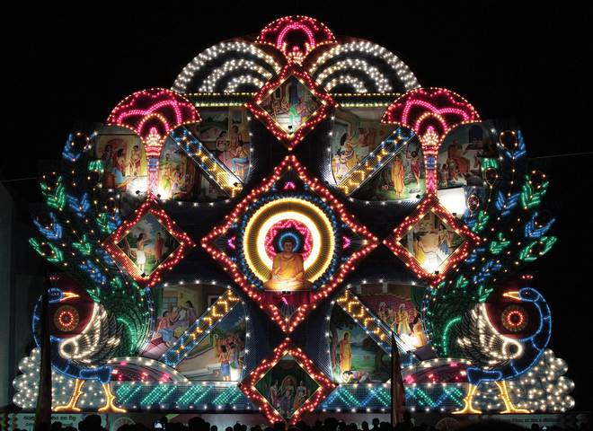
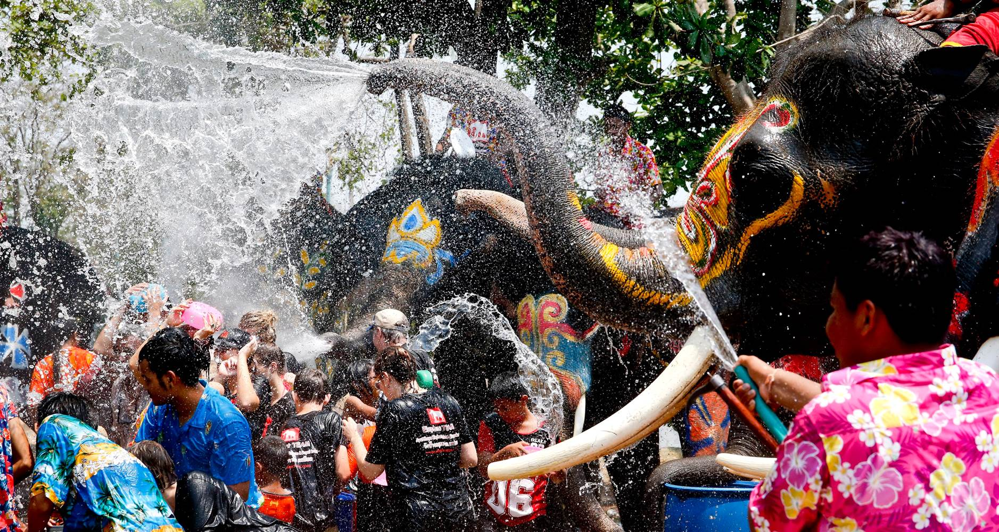

.gif)


.jpg "Jainism")


 1
1 2
2 3
3 4
4 5
5 6
6 7
7 8
8 9
9 10
10 11
11 12
12 13
13 14
14 15
15 16
16Buddhism |
www.thereligious.com |
 |
Soon after Buddha's death or parinirvana, five hundred monks met at the first council at Rajagrha, under the leadership of Kashyapa. Upali recited the monastic code (Vinaya) as he remembered it. Ananda, Buddha's cousin, friend, and favorite disciple and a man of prodigious memory recited Buddha's lessons the Sutras. The monks debated details and voted on final versions. These were then committed to memory by other monks, to be translated into the many languages of the Indian plains. It should be noted that Buddhism remained an oral tradition for over 200 years. |
| Buddhism is very much relevant today as it was two thousand years ago. The practice of Buddhism provides insightful solutions to the vexing problems of humanity such as violence, stress and suffering. Buddhism is essentially a religion of the mind rather than the spirit. It is grounded in reality, and its practices and solutions are verifiable and repeatable. |  |
 |
The Buddha found a very practical and direct approach to resolve the problem of suffering.This section contains information about the life, activities, and teachings of the Buddha from his early days to his last days.Buddhism is essentially an ascetic religion. The Buddha organized the monks into groups so that they could stay together and learn from each other. |
| Buddhism is an Indian religion attributed to the teachings of Buddha.The details of Buddha's life are mentioned in many early Buddhist texts but are inconsistent, his social background and life details are difficult to prove, the precise dates uncertain. The evidence of the early texts suggests that he was born as Siddhārtha Gautama in Kapilavatthu, a town in the plains region of modern Nepal-India border, and that he spent his life in what is now modern Bihar and Uttar Pradesh. Some hagiographic legends state that his father was a king named Suddhodana, his mother queen Maya, and he was born in Lumbini gardens. |  |
 |
Asoka, the first Buddhist Emperor, was the ruler of the Magadhan empire. Initially a ruler obsessed with the aim of expanding his empire, he changed after witnessing the brutal carnage at the battle of Kalinga. This event led him towards Buddhism and he built his empire into a Buddhist state, a first of its kind. He laid the foundation of numerous stupas and spread the teachings of Lord Buddha throughout the world. |
 |
Buddhism originated in India, but inspired the world for centuries before the great decline happened, which the Buddha himself predicted during his lifetime as the inevitable consequence of all things that are impermanent. It is debatable how far the Buddha deviated from the tenets of Vedic religion which his parents practiced. However, it is true that his leadership and organizational skills and the dedication of his early disciples played a significant role in the formation and progress of Buddhism in ancient India as a distinct tradition. |
 |
 |
 |
 |
Mahayana began in the first century bc, as a development of the Mahasangha rebellion. Their more liberal attitudes toward monastic tradition allowed the lay community to have a greater voice in the nature of Buddhism. For better or worse, the simpler needs of the common folk were easier for the Mahayanists to meet. For example, the people were used to gods and heroes. So, the Trikaya (three bodies) doctrine came into being: Not only was Buddha a man who became enlightened, he was also represented by various god-like Buddhas in various appealing heavens, as well as by the Dharma itself, or Shunyata (emptiness), or Buddha-Mind, depending on which interpretation we look at -- sort of a Buddhist Father, Son, and Holy Ghost |
Festivals | |
| Different parts of the countries celebrate Buddhist New Year on different days for countries like Thailand, Burma, Sri Lanka, Cambodia celebrate in the month of April for three days from the first full moon whereas for the Mahayana countries it falls in the month of January on the first full moon day. The way of celebrating also varies depending upon the origin and the culture but with the same spirit and gaiety. Each people of the religion hope the best for the coming years and to rectify the mistakes they did in the past and not to repeat it in future. | <  |
| Asalha Puja Day ("Dhamma Day") Asalha Puja means to pay homage to the Buddha on the full moon day of the 8th lunar month (approximately July). It commemorates the Buddha's first teaching: the turning of the wheel of the Dhamma (Dhammacakkappavattana Sutta) to the five ascetics at the Deer Park (Sarnath) near Benares city, India. Where Kondanna, the senior ascetic attained the first level of enlightenment (the Sotapanna level of mind purity). |
| Loy Krathong (Festival of Floating Bowls) At the end of the Kathin Festival season, when the rivers and canals are full of water, the Loy Krathong Festival takes place in all parts of Thailand on the full moon night of the Twelfth Lunar month. People bring bowls made of leaves (which contain flowers) candles and incense sticks, and float them in the water. As they go, all bad luck is suppose to disappear. The traditional practice of Loy Krathong was meant to pay homage to the holy footprint of the Buddha on the beach of the Namada River in India. |  |
| In Theravadin countries, Thailand, Burma, Sri Lanka, Cambodia and Lao, the new year is celebrated for three days from the first full moon day in April. In Mahayana countries the new year starts on the first full moon day in January. However, the Buddhist New Year depends on the country of origin or ethnic background of the people. As for example, Chinese, Koreans and Vietnamese celebrate late January or early February according to the lunar calendar, whilst the Tibetans usually celebrate about one month later. | <
|

 |
 |
 |

|